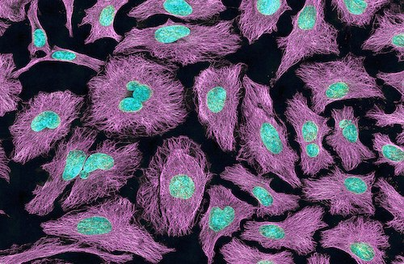

Lancer la version interactive sur : 

Application aux sciences de la vie¶
Objectifs et durée¶
Cette séquence a pour objectif de consolider les connaissances en manipulation d’images, de pratiquer les outils algorithmiques standards, de découvrir le domaine du traitement du signal et d’explorer la notion de complexité algorithmique. Il faudra compter une douzaine de période pour la réaliser.
Problème: Compter les cellules¶
Le traitement des images est beaucoup utilisé dans le domaine médical. Dans cette activité nous allons nous mettre dans la peau d’un chercheur en sciences de la vie et découvrir le type de problème que nous pourrions renncontrer: nnous obtenons des images de cellules de notre microscope, similaire à celle ci-dessous, et pour faire avancer notre recherche nous devons trouver un moyen efficace pour compter les cellules présentes dans chaque image.

Pour résoudre ce problème nous allons bien sur uttiliser nos connaissances sur la manipulation d’images. Nous allons réutiliser les libraries préccédentes et nous en rajouterons juste une, imageio, pour lire un fichier image standard.
[2]:
import numpy as np # Pour manipuler des tableaux de nombres
import matplotlib.pyplot as plt # pour afficher des images
import imageio # pour lire notre photo
Commençons d’abord par vérifier que nous sommes bien en mesure de lire une de nos images et de la récupérer sous format numérique.
[3]:
img_cells = imageio.imread('https://raw.githubusercontent.com/info-edu/Data/main/images/cells.png')
print(type(img_cells))
print(img_cells.shape)
plt.imshow(img_cells)
plt.show()
<class 'imageio.core.util.Array'>
(326, 500, 4)
L’image a un type différent de numpy.ndarray, mais comme on peut le voir, c’est aussi un tableau avec des méthodes similaires à celles de numpy. Il y a par contre une différence majeure par rapport aux images utilisées jusqu’à présent. Le tableau a cette fois-ci 3 dimensions: la hauteur, la largeur et le canal de couleur. Ici notre image est constituée de 4 images à 2 dimensions, correspondant au canal rouge (img_cells[:,:,0]), au canal vert (img_cells[:,:,1]), au canal bleu
(img_cells[:,:,2]) et au canal alpha (img_cells[:,:,3]). Voyons ces 4 canaux séparement.
[4]:
# Initialisation d'une figure contenant plusieurs graphiques:
fig, (ax1, ax2, ax3, ax4) = plt.subplots(1, 4, figsize=(20,10))
ax1.imshow(img_cells[:,:,0], cmap='gray',vmin = 0, vmax = 255)
ax1.set_title('rouge')
ax2.imshow(img_cells[:,:,1], cmap='gray',vmin = 0, vmax = 255)
ax2.set_title('vert')
ax3.imshow(img_cells[:,:,2], cmap='gray',vmin = 0, vmax = 255)
ax3.set_title('bleu')
ax4.imshow(img_cells[:,:,3], cmap='gray',vmin = 0, vmax = 255)
ax4.set_title('alpha')
plt.show()
Stratégie: lire, segmenter, filtrage, grouper, compter¶
Pour compter automatiquement les cellules, voici l’approche que nous allons utiliser:
Nous allons segmenter l’image en deux pour isoler le fond des cellules, mais également isoler les cellules entre elles au mieux. Nous arriverons donc à une image avec deux valeurs possibles: des pixels à 255 s’ils sont considérés comme appartenants à une cellule, et les autres à 0.
Nous allons identifier les groupes de pixels correspondants à une même cellule.
Nous allons compter le nombre de cellules (le nombre de groupes de pixels à 255).
Lire¶
Pour différencier les pixels du fond des pixels des cellules, le motif de l’image pourrait être utilisé, mais il y a plus simple. L’intensité lumineuse suffira et c’est ce que nous utiliserons. Comme le centre des cellules est le plus lumineux sur le canal vert, nous allons récupérer l’image 2D correspondante à ce canal pour faire notre segmentation.
[4]:
# Ex. 1
# ...
Segmenter¶
Nous aimerions compter le nombre de cellule dans cette image. Pour cela on va d’abord séparer les pixels correspondants à des cellules du reste. Cela est possible puisque les cellules sont plus claires que le fond. On pourra donc séléctionner un seuil et exécuter un programme pour segmenter notre image en fonction de ce seuil: Si l’intensité du pixel est supérieur au seuil alors le pixel sera considéré comme appartenant à une cellule, sinon non. Le résultat sera stocké dans une nouvelle image
appellée image_segmentee.
Le seuillage se fera en deux étapes: d’abord nous allons calculer et visualiser un histogramme qui permettra de savoir combien de fois chaque couleur apparait dans notre image. Cet histogramme nous permettra de choisir le seuil et de l’appliquer.
[5]:
# Ex. 2
# def get_hitogramme
plt.bar(range(256),get_histogramme(img_a_segmenter))
plt.show()
[6]:
# Ex. 2
# def segmenter et seuil
img_segmentee = segmenter(img_a_segmenter,seuil)
plt.imshow(img_segmentee, cmap='gray',vmin = 0, vmax = 255)
plt.show()
Filtrage¶
Comme vous pouvez probablement le voir, il n’est pas possible de trouver un seuil qui permette d’isoler proprement le noyau des cellules du fond. Or pour compter les cellules c’est nécessaire de le faire, car nous serons amenés à compter les groupes de pixels à 1 qui sont connectés. Pour résoudre le problème nous allons filtrer notre image de départ, comme si nous souhaitions le voir à travers de lunettes pleines de buée. En floutant notre image, les pixels de forte intensité qui sont isolés disparaitront.
De manière mathématique, le floutage n’est rien d’autre qu’une moyenne: je transforme l’intensité lumineuse de chaque pixel en la moyenne de l’insensité lumineuse de ce pixel et de ses voisins.
[7]:
# filtrage
def readPixel(img,x,y):
if x >=0 and y >= 0 and x <= img.shape[1]-1 and y <= img.shape[0]-1:
return img[y,x]
else:
return 0
# Ex. 3
# def filtre
# img_filtree = ...
# img_segmentee = ...
plt.imshow(img_filtree, cmap='gray',vmin = 0, vmax = 255)
plt.imshow(img_segmentee, cmap='gray',vmin = 0, vmax = 255)
plt.show()
Grouper¶
A présent nous devrions avoir deux noyaux qui sont mis en évidence dans notre image img_segmentee. Pour compter ces noyaux il va falloir être capable de faire reconnaitre à l’ordinateur que tous les pixels blancs du premier noyaux sont connectés entre eux, et qu’ils ne sont pas connectés à ceux du deuxième noyau.
[8]:
# Ex. 4
# img_group = ...
# init. img_group
# Visualisation de l'image groupe: ici la valeur en elle même n'a que peu d'importance,
# ce qui est important est de savoir quelles valeurs sont différentes ou identiques
# pour cela nous allons utiliser une fonction qui permet d'attribuer une couleur aléatoire
# à chaque valeur. Ainsi 0 pourrait être rouge, 1 jaune, 2 bleu... plutôt que rouge, rouge un peu plus foncé...
import matplotlib
cmap_rand = matplotlib.colors.ListedColormap(np.random.rand( 500,3))
plt.figure(figsize = (10,10))
plt.imshow(img_group, cmap_rand)
plt.show()
[9]:
# Ex. 4
# def change_image_where_to
# expand numbers in img_group
# Visualisation de l'image finale
plt.figure(figsize = (10,10))
plt.imshow(img_group, cmap_rand)
plt.show()
Compter¶
Chaque pixel est identifié maintenant avec une valeur correspondant à un identifiant de groupe. Et chaque cellule correspond comme on le voit dans la visualisation précédente à un seul groupe. Pour compter le nombre de cellule, il ne nous reste plus qu’à identifier combien d’identifiants de groupe différents il y a.
[10]:
# Ex. 5
# def getSetFromImageGroupe
# list_group = ...
# enleve -1 de la liste
print("Il y a "+str(len(list_group))+ " cellules dans l'image")
Il y a 2 cellules dans l'image
Elements connectés - version avancée¶
Alors que la solution utilisée précédemment est intuitive, elle n’est absolument pas efficace: dans le pire des cas le programme devra passer à travers toute l’image et cela pour chaque pixel (complexité de O(N^2)). Vous pouvez tester les limites de cette approche en appliquant ce programme non plus à une section de l’image de 100x100 mais à l’image de départ et vous verrez le temps que cela prend…
Heureusement il y a beaucoup plus efficace. Mais qui dit plus efficace dit aussi souvent moins lisible. La stratégie pour faire plus rapidement sera la suivante : + On définit un état pour chacun de nos pixels comme ayant été visité ou non. Au début on considère qu’aucun pixel n’a été visité. On définira également un identifiant de groupe pour chaque pixel. Les pixels du premier groupe trouvé auront l’identifiant 1, le deuxième 2… + On commence à visiter l’image en prenant le premier pixel à
255. On retient que ce pixel a été visité en changeant son état. On retient également que ce pixel appartient au groupe 1. On lance alors une fonction propage_groupe qui se propage à tous les voisins qui sont à 255 et qui n’ont pas encore été visités. La fonction met définit le groupe de chaque voisin visité, le marque comme visité, et se propage à tous leurs voisins qui sont à 255 et qui n’ont pas été visités. De cette manière, les groupes sont identifiés les uns après les autres.
[11]:
import sys
sys.setrecursionlimit(1500)
def propage_groupe_general(img,visit,group,x, y,groupe_c):
visit[y,x] = 1 # marque pixel comme visité
group[y,x] = groupe_c # retien sotn groupe
if x-1 >= 0 and visit[y,x-1] == 0 and img[y,x-1] == 255:
propage_groupe_general(img,visit,group,x-1,y,groupe_c)
if x+1 < img.shape[1] and visit[y,x+1] == 0 and img[y,x+1] == 255:
propage_groupe_general(img,visit,group,x+1,y,groupe_c)
if y-1 >= 0 and visit[y-1,x] == 0 and img[y-1,x] == 255:
propage_groupe_general(img,visit,group,x,y-1,groupe_c)
if y+1 < img.shape[0] and visit[y+1,x] == 0 and img[y+1,x] == 255:
propage_groupe_general(img,visit,group,x,y+1,groupe_c)
def connected_components(img_threshold):
# défini deux variables par pixel:
# une pour savoir si un pixel a été visité par l'algorithme.
# 0 pour "pas visité" et 1 pour visité
visited_p = np.zeros(img_threshold.shape)
# un autre pour savoir à quel groupe le pixel a été lié
groupe_p = -np.ones(img_threshold.shape)
# le premier pixel à 255 sera lié au groupe 1, ainsi que tous les pixels à 255
# qui lui sont voisins, ainsi que tous les pixels à 255 qui sont voisins et voisins...
# puisque le premier pixel et un voisin de son voisin, on utilise la variable vitite
# pour ne pas faire un programme qui ne finit jamais. On propage ainsi le groupe seulement
# sur les voisins qui n'ont pas été encore visités.
groupe_courant = 1
for y in range(img_threshold.shape[0]):
for x in range(img_threshold.shape[1]):
# si mon pixel est à 255 et qu'il n'a pas été visité
if visited_p[y,x] == 0 and img_threshold[y,x] == 255:
# alors on le lie au groupe groupe_courant ainsi que tous ses voisins de
# manière réccurrente.
propage_groupe_general(img_threshold,visited_p,groupe_p,x,y,groupe_courant)
# on liera le prochain pixel à 255 pas encore visité à un autre groupe
groupe_courant += 1
return groupe_courant, groupe_p
# trouve les cellules
nb_groupes, image_groupe = connected_components(img_segmentee)
plt.figure(figsize = (40,40))
plt.imshow(image_groupe, cmap_rand)
plt.show()
# compte les cellules
list_group = getSetFromImageGroupe(image_groupe)
list_group.remove(-1)
print("Il y a "+str(len(list_group))+ " cellules dans l'image")
Il y a 2 cellules dans l'image